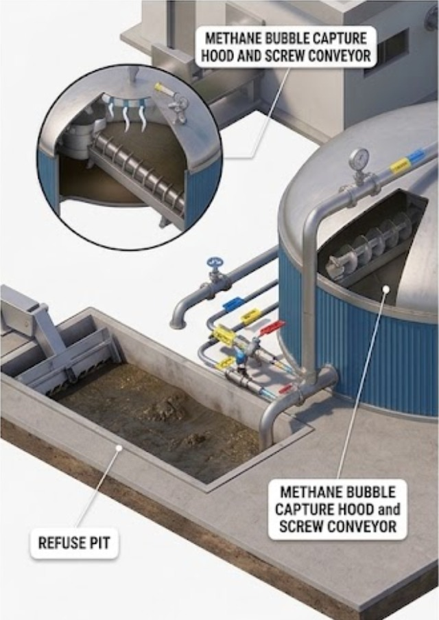

Methane Bubble Capture Hood dan Screw Conveyor

Methane bubble capture hood adalah tudung yang dipasang di bagian atas tangki digester. Fungsinya menangkap gelembung gas metana yang naik ke permukaan slurry, lalu mengalirkannya melalui pipa dan katup agar biogas bisa dimanfaatkan.
Komponen pada gambar
- Methane bubble capture hood: tudung penangkap gelembung metana di atas tangki.
- Screw conveyor: ulir pengangkut di dalam tudung yang memindahkan material dari permukaan tangki.
- Refuse pit: bak terbuka tempat penampungan limbah sebelum masuk ke sistem pengolahan.